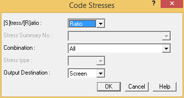
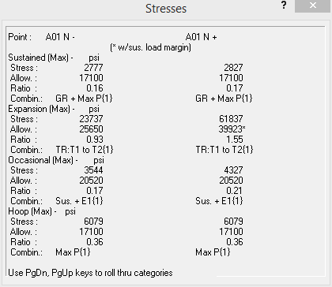
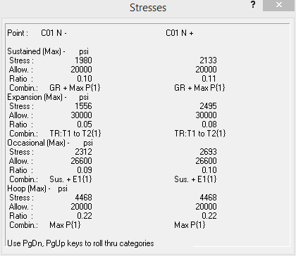

Select Result > Interactive > Code Stresses.
- The Code Stresses dialog is displayed.

- Press OK to accept the defaults.
- A color-coded plot of stress ratios between piping points is displayed. A legend appears to the left of the model area, making it easy to quickly identify ranges of values along a piping system. As with the other interactive options in the Result tab, the crosshairs can also be positioned at any point to calculate the code stress data associated with an individual point.
| Hint: |
Drag the information dialog to the side of the modeling area. Doing so will allow you to view both the model and the data associated with selected points. |

- Commands are available in the Result > Navigate group for navigating from the least stressed to the most stressed points. Experiment with these buttons and note how the information dialog is updated with the new point information.
- In addition to the VCR-type controls shown above, you can also pick on a point to display its associated stress data. Pick point C01 N (the near point of the bend on Segment C). The information dialog is updated.

- Close the information dialog and complete the stress review.
-
.jpg) Press Cancel to
close the Point Name dialog.
Press Cancel to
close the Point Name dialog. - Select File > Save > Save to save the model.